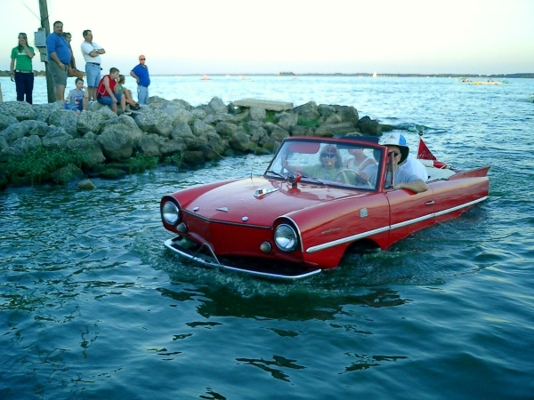
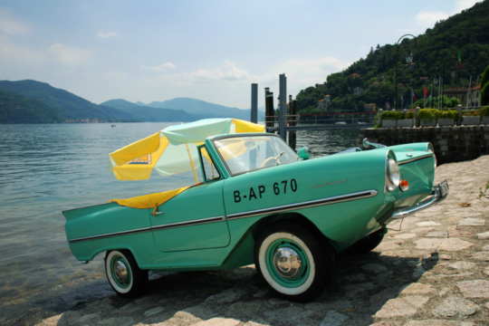

The Specifications

The Amphicar weighs a total of 2,315lbs and is powered by a four cylinder 1147cc
Triumph engine which gives it a total of 43 horsepower.
It has a rear-wheel drive 4-speed manual transmission that drives both the rear wheels and the propellers.

The car uses its front wheels to steer in the water much like you would on land with the major downside being
it was more difficult to manuver compared to a regular boat.
Home | Specs | Facts | Tour
By Max Veiga